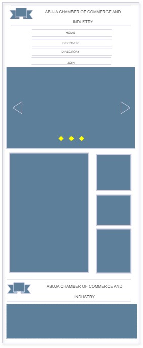
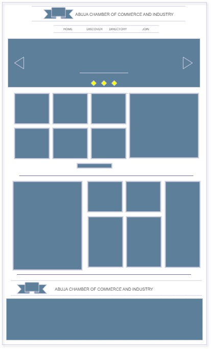

Site Name and Purpose
Site Name: Abuja Chamber of Commerce and Industry
Reason: The site name reflects the location and purpose of the chamber, promoting business and industry in Abuja.
Site Purpose:
- Provide a platform for local businesses to connect and network.
- Offer resources and information for business development and growth in Abuja.
Scenarios
- What events will the chamber be holding this month that promote business-to-business networking?
- Where can I find contact information for the chamber's board of directors?
- What has been the population growth in Abuja?
Color Schema
Primary Color: #003366 (Used for headings and accents)
Secondary Color: #F3F3F3 (Used for backgrounds and text)
Typography
Main Font: Arial, sans-serif (Used for body text)
Heading Font: Georgia, serif (Used for headings)
Wireframe
Mobile View: 
Desktop View: 
General Design
- The content is custom-built with valid, semantic, and contemporary HTML, CSS, and JavaScript technology.
- The design is consistent throughout the site providing ease of navigation and supporting positive user experiences.
- The site supports responsive design techniques allowing delivery of the site and its content on all classes of devices—from mobile clients to large-wide screens.
Page Specifications
- 📄 Home - The home page will contain some attention-grabbing information along with community information, weather, calls to action, and business spotlights.
- 📄 Discover - The discover page locale history, current demographics, and current events. An image montage will orient visitors to the area and interesting area sites, etc.
- 📄 Directory - This page provides a list of local businesses and other organizations that belong to the chamber of commerce.
- 📄 Join - This page contains information about the benefits of joining the chamber and a membership application form. There are three membership level options of non-profit, silver, and gold. The different levels have different perks including directory listings, publications, trainings, social media work, luncheons, sponsorships, advertising, etc.